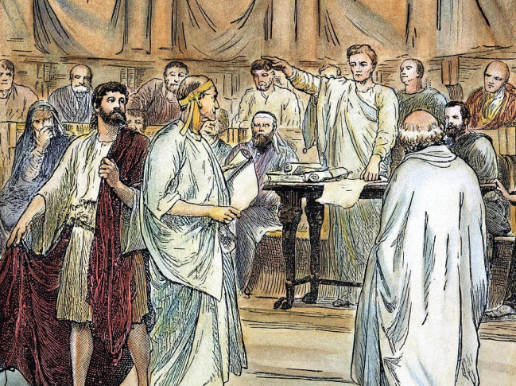
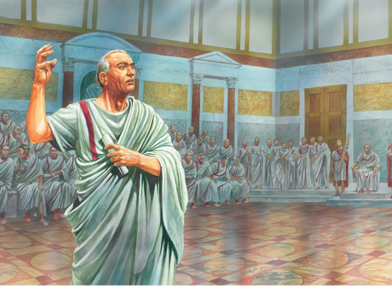

Происхождение адвокатуры в том виде, в котором мы сегодня представляем себе этот институт, следует отнести к периоду Римской республики и возникновения состязательного правосудия.
Известный русский исследователь адвокатуры Е.В. Васьковский отмечал, что адвокат – «общественный деятель», что профессия адвоката – «общественная должность», а адвокатура – «институт публичного права».
Стремление общества к справедливому правосудию инициировало создание института публичного судебного присутствия и защиты интересов частного лица, каковым и является адвокатура. Термин «advocatus» произошел от латинского слова «advocatio», означающего обращение за помощью, судебную защиту.
История адвокатуры своими корнями уходит в глубину веков. Возникновение этого института было исторически обусловлено объективно складывавшимися социальными, экономическими, политическими, культурными предпосылками.
А.Г. Кучерена отмечает, что исторически первой появилась такая форма охраны прав, как самозащита. Человек сам решал, когда его право нарушено, сам определял виновника, сам применял к нарушителю определенные меры принуждения. Таким образом, как только стали наблюдаться случаи нарушения прав конкретных индивидов, сразу возникла потребность в защите этих прав.
Далее А.Г. Кучерена указывает на то, что индивид не всегда мог или желал отстаивать свои нарушенные либо находящиеся под угрозой нарушения права самостоятельно, что было вызвано различными причинами. Таким образом, появились социальные предпосылки возникновения института представительства. Складывались и правовые механизмы, позволившие переложить функцию защиты права с самого правообладателя на иных лиц, представлявших его интересы. Первоначально это были родственники, близкие люди, формировался институт родственного представительства. Затем эти функции стали брать на себя посторонние лица, действовавшие ради собственного интереса или за вознаграждение. Постепенно, в связи с ростом числа правовых предписаний, усложнением их содержания представительство и защита чужих интересов начали осуществляться на профессиональном уровне, т.е. адвокатами. Это были люди, способные разъяснить лицу, право которого нарушено или подвергается угрозе нарушения, смысл, значение и последствия всех его действий, раскрыть содержание правовых норм, регулирующих соответствующее общественное отношение.
Говоря об историческом значении института адвокатуры, справедливо отметить, что традиционно исследователи при анализе института адвокатуры делают акцент на ее роль при рассмотрении и разрешении судом уголовных и гражданских дел. Тем не менее, значение этого правового института гораздо шире. Его наличие следует расценивать как необходимое условие существования правового государства и гражданского общества. Адвокатура позволяет декларированные государством права воплотить в жизнь, защитить от нарушений. Не являясь государственным органом и будучи в силу этого свободной от давления властей, навязывания конъюнктурных соображений, она способна абстрагироваться от сиюминутных потребностей ложно понятой политической целесообразности.
Трудно не согласиться с мнением, что если общество заинтересовано в том, чтобы в нем был правовой порядок, а не хаос произвола властей, оно должно быть заинтересовано и в том, чтобы существовала независимая от властей правозащита, критикующая власти и убеждающая их в ограничении своей карательной активности. Реальным осуществлением, плотью правозащиты является адвокатура.
Наряду с социальными, правовыми и политическими предпосылками авторами выделяются и моральные, лежащие вне сферы права предпосылки. Восстанавливаемая в процессе судопроизводства справедливость – категория нравственная, законодательно не определяемая. В большинстве правовых систем справедливым считалось и считается такое решение суда, которое вынесено с точным соблюдением материальных и процессуальных норм. Правовые же нормы не всегда совершенны, они могут устаревать, иметь пробелы, противоречить друг другу. Кроме того, решения принимаются судьями по внутреннему убеждению, которое формируется под влиянием мнений участников процесса. Наличие в процессе адвоката, защищающего позицию доверителя, способствует выработке объективного и непредвзятого, а, следовательно, справедливого решения суда.
Зародившись как одна их форм правозащиты, адвокатура сыграла большую роль в развитии судебной власти, в становлении институтов правосудия. По мере того как усложнялась политическая организация общества вследствие объединения отдельных племен под властью общего вождя, отправление правосудия становится не под силу одному лицу. Глава общины нуждался в помощниках; некоторые из них стали выполнять функции, сходные с отправлением правосудия.
В древних государствах, например в Китае, родители или друзья защищали обвиняемого, тем самым образуя первый уровень адвокатуры – родственную адвокатуру. В Древней Индии правосудие отправлялось царем как верховным судьей и коллегиальными судами. Процесс основывался на принципах гласности, устности, состязательности как в гражданских, так и в уголовных делах. Уже известна самостоятельная адвокатура, причем функции правозаступничества и представительства совмещались в одном лице. В Древнем Египте судебный процесс носил письменный и тайный характер. Стороны дважды обменивались состязательными бумагами, после разбирательства которых, принималось решение. Тяжбы египтяне разрешали на основе формальных доказательств, считая, что искусные уловки и красноречие ораторов побуждали судей смягчить строгость законов и относиться с меньшим вниманием к требованиям справедливости. Несмотря на то, что формально в Древнем Египте адвокатура отсутствовала, одно то, что египтяне были знакомы с методами защитников, говорит о существовании там адвокатуры до введения письменного процессуального производства.
У древних иудеев право отождествлялось с религией. Судьи считались наместниками Иеговы. Они должны были быть беспристрастными и милосердными. Судопроизводство основывалось на принципах устности, гласности и состязательности. У подсудимых было право на защиту, что предопределило появление адвокатуры. Сначала в качестве защитника мог выступать любой человек, это считалось священной акцией. «Научитесь делать добро, – говорится в книге пророка Исайи, – ищите правды, спасайте угнетенного, защищайте сироту, вступайтесь за вдову». В более позднее время при судах синедриона стали появляться лица, которые готовились быть судьями, они назывались кандидатами. Кандидаты присутствовали на судебных заседаниях и говорили речи в защиту обвиняемых. Таким образом, по сути, они выполняли роль адвокатов, но так как выступали не по приглашению подсудимых и без предварительного соглашения с ними, называть их таковыми все же нельзя. Впоследствии в еврейском языке появляется термин «адвокат». Собственно, история адвокатуры в классическом ее понимании начинается с Древней Греции, с Афин и с Древнего Рима.
Одна из важнейших задач адвокатской деятельности – судебное представительство. В государствах Древнего мира оно было развито в различной степени: в одних странах совмещалось с правозаступничеством (Индия, мусульманские страны), в других – вообще не допускалось (Египет, во всяком случае, после введения письменной формы процесса). В древнегреческих государствах суд вершился или самими царями, или опытными мужами знатного происхождения. В судебном процессе господствовали принципы устности, гласности и состязательности. Тяжущиеся являлись на суд лично и сами защищали свои права.

Появление адвокатуры связано в первую очередь с Афинами. В афинском суде было обязательным непосредственное участие сторон. Естественно, обыкновенные граждане не разбирались в юриспруденции, не обладали даром красноречия, а неумение говорить означало верный проигрыш в деле. Возникла потребность в сочинении речей для тяжущихся, их стороны заучивали и произносили в суде. Такие речи назывались логографиями. Сначала они составлялись родными и друзьями тяжущихся, но впоследствии это стало профессиональным занятием лиц посторонних – логографов. Первым профессиональным логографом традиционно считается Антифон (V в. до н. э.), который, по словам Плутарха, ввел обычай брать плату за сочинение судебных речей. За ним последовали другие логографы, в числе которых были знаменитые ораторы Лизий, Исократ, Эсхил, Демосфен. Такой вид предоставления услуг иногда именуется «немой адвокатурой».
Но логографы не могли в полной мере удовлетворить потребности лиц, состязавшихся в суде. Логографии годились только для обвинительных и исковых речей, их трудно было применить в защитных речах и репликах. Кроме того, в Афинах появился институт, в определенной степени напоминавший прокуратуру. Частному обвинителю было предоставлено право избрать себе одного или даже нескольких помощников из числа выдающихся ораторов, а в важных делах и при отсутствии частных жалобщиков народ назначал официальных обвинителей.

Первыми юристами в Риме были патроны, совмещавшие две профессии – юрисконсультов и адвокатов. Они не только защищали своих доверителей в суде, но и давали им юридические советы, в частности, при заключении сделок. Однако, когда патронат распался и изучение права сделалось достоянием всех желающих, развитие юриспруденции пошло двумя путями. Одни юристы, не обладавшие даром красноречия, занимались исключительно дачей юридических консультаций, другие представляли интересы сторон в судебном процессе. Первые назывались юрисконсультами или правоведами. Их деятельность, помимо консультирования по юридическим вопросам и участия при заключении сделок для соблюдения требуемых формальностей, состояла в поддержке на суде адвокатов, которые не всегда были основательно знакомы с правом. Консультации давались или на дому, или на форуме – специально отведенном для этих целей месте. Впоследствии правительство построило там здание для юридических консультаций. При необходимости консультанты отправлялись со своими доверителями в суд и предоставляли адвокату юридические сведения, необходимые для данного дела, часто ораторам неизвестные. Нередко за консультациями обращались и сами судьи, чтобы принять решение по делу и сослаться при этом на авторитет ученого юриста. Юрисконсультами были по обыкновению патриции, причем их деятельность вознаграждалась доверителями исключительно на добровольных началах. Все это повышало авторитет профессии, ее представители пользовались особым почетом.
В отличие от юрисконсультов адвокаты продолжали заниматься судебной защитой. Они по-прежнему, до конца существования республики, назывались патронами. По древнеримскому праву представительство разрешалось только в исключительных случаях, и патроны являлись на суд вместе с тяжущимися доверителями. С течением времени термин «адвокат» стал распространяться на лиц, которые помогали тяжущемуся в процессе, собирали документы, покрывали издержки, определяли средства защиты и сообщали о них патронам. Такой обычай, аналогичный древнерусскому обычаю прибегать к помощи пособников, просуществовал до периода империи. Кроме того, в римском судебном процессе участвовали хвалители, которые в качестве свидетелей характеризовали заслуги и достоинства подсудимого; замедлители, задача которых заключалась в том, чтобы произносить речь во время отдыха главного оратора. Однако совершенно ясно, что все эти разновидности юридической профессии не могут быть в полной мере отнесены к профессии адвоката, и только патроны были адвокатами в истинном значении этого слова.
В республиканский период адвокатура являлась свободной профессией. Законодательная регламентация ее почти не коснулась, только практика и обычай вырабатывали некоторые правила, регулировавшие различные стороны этой профессиональной деятельности. Несмотря на отсутствие четкого порядка приема в адвокатуру, по свидетельству Плиния-младшего, с древности существовал обычай, по которому молодые люди, желавшие посвятить себя адвокатуре, являлись первый раз на форум в сопровождении какого-либо покровительствовавшего им важного лица, например, бывшего консула.
В период империи профессия юриста, и особенно адвоката, получает корпоративное оформление, состав адвокатуры определяется специальными императорскими списками.
Каноническое право заимствовало целый ряд постановлений об адвокатуре из римского права. Оно требовало от адвокатов трехлетнего изучения канонического и гражданского права, практической подготовки и ежегодного принесения присяги. К представительству в процессах в духовных судах допускались как духовные, так и светские лица. Но ввиду того, что среди светских было немного людей, сведущих в праве, большинство адвокатов принадлежало к духовенству. Со временем в их руки перешли не только церковные, но и гражданские и уголовные дела. Однако с появлением Дигест Юстиниана и с принятием постановлений Вселенских соборов Лютеранского и Турского духовным адвокатам было запрещено выступать в светских судах. Светские юристы усердно предались изучению римского права; влияние канонического права уменьшилось, возросло значение гражданских судов, все больше стала развиваться светская адвокатура.
С конца XIII в., адвокатура подвергается законодательной регламентации. В 1270г. появились знаменитые Учреждения Людовика Святого, заложившие основы французского судоустройства и судопроизводства. Ограничив применение судебных поединков и, тем самым, предоставив больший простор для деятельности адвокатов, Людовик издал несколько постановлений в отношении этой профессии, практически воспроизводивших римское право. Прежде всего, он предписывал им «не защищать на суде незаконных дел». Далее он требовал, чтобы адвокаты были «официальными защитниками бедных, вдов и сирот» и чтобы в прениях с противниками они «говорили вежливо и без грубости». Наконец, ссылаясь на Кодекс Юстиниана, он запретил «заключать какие бы то ни было сделки относительно гонорара с клиентами во время производства дела». Сын Людовика Филипп Смелый развил и дополнил эти постановления. Указом 1274г. он определил, что: 1) адвокаты, становясь таковыми, должны приносить присягу по формуле, близкой к формуле римского права, но дополненной пунктом о гонораре; 2) эту присягу они должны повторять ежегодно; 3) размер гонорара должен устанавливаться сообразно с родом дела и способностью адвоката, но ни в каком случае не может быть больше 30 турских ливров.
В XIV в. появляются первые зачатки сословной организации адвокатуры. Когда высший суд королевства – парламент, поначалу разъездной, становится оседлым, адвокаты, практиковавшие при нем и сопровождавшие его в путешествиях по государству, сами образовали свободную ассоциацию и назвали сословием по образу римской адвокатуры имперского периода, в противоположность многочисленным цехам и промышленным корпорациям того времени. Сословная организация не была сразу определена законодательно, но парижский парламент в своих актах охотно признавал ее, а законодательство, не касаясь отношений внутри этого сословия, ограничивалось определением внешней его организации. В течение XIV-XVI столетий было издано около 50 указов, относящихся к адвокатуре.
2 сентября 1790г. она была упразднена Учредительным собранием. Один из декретов Учредительного собрания гласил: «…Те, кто раньше назывались адвокатами, не должны составлять ни сословия, ни корпорации, носить особые одежды при исполнении своих обязанностей». Однако через не более, чем 12 лет, вновь стали проявляться признаки сословной организации адвокатуры. В 1802г. адвокатам было предписано носить при отправлении своих обязанностей адвокатскую мантию. В 1822г. вышел новый закон о независимости адвокатуры. Причиной его появления стал интересный прецедент. Прокуроры, назначая дисциплинарный совет из выбранных сословием кандидатов, оказывали исключительное предпочтение одним и тем же лицам. Однако на выборах 1822г. случилось так, что почти все благонадежные не попали в список кандидатов в совет. Это подтолкнуло прокуратуру к инициированию принятия нового закона об адвокатуре. В предисловии к нему министр юстиции писал, обращаясь к королю: «Эта профессия обладает привилегиями, которым удивляются робкие умы, но необходимость которых давно доказана опытом. Независимость адвокатуры столь же дорога для правосудия, как и для нее самой. Без принадлежащей адвокатам привилегии свободно обсуждать решения, произносимые правосудием, ошибки его стали бы чаще, умножились, были бы непоправимы, или, лучше сказать, пустой призрак правосудия занял бы место той благодетельной власти, которая не имеет другой опоры, кроме разума и истины… Без внутренней организации, снимающей с адвокатуры бесполезное иго постоянного и непосредственного надзора, это сословие не могло бы более надеяться на то, что будет видеть в своих рядах великих людей, составляющих его славу, а правосудие, на котором отражается блеск и достоинство их талантов, в свою очередь, утратило бы своих вернейших союзников и лучших руководителей».
Помимо французской адвокатуры, модель которой была использована в основном при создании института присяжных поверенных в России в XIX в., другой моделью европейской адвокатуры была адвокатура в Англии. Английская адвокатура в стране обычного права и самоуправления развивалась практически без всякого воздействия на нее законодательной власти. Ее организация не была определена в законах, а основывалась на выработанных веками обычаях. Первые сведения об английских адвокатах мы находим в законах англосаксонских королей. Адвокаты назывались защитниками. Так, по закону Эдмунда X., человек, убивший члена другой семейной общины, избирал себе защитника, который своим посредничеством должен был предотвратить кровную месть и заменить ее выкупом.
Переходя и рассмотрению отечественной адвокатуры, необходимо отметить, что становление профессиональной адвокатуры в Казахстане связано с историей становления данного института в России.
История сохранила имена выдающихся адвокатов, не только ярких профессиональных юристов, но и общественных деятелей, стоявших на защите справедливости например, А.Ф. Кони, известный своими прогрессивными идеями, блестящими выступлениями в суде в защиту обездоленных – жертв произвола царских чиновников, Н. Карабчевский, Ф. Плевако, В. Спасович, А. Урусов, С. Неклюдов и другие блестящие адвокаты (и ученые), выступления и произведения которых во многом способствовали созданию в русском обществе прогрессивных настроений. К числу столь же прогрессивно мыслящих людей можно отнести и профессора Н.С. Таганцева – крупнейшего специалиста в области уголовного права, сен (...)
История сохранила имена выдающихся адвокатов, не только ярких профессиональных юристов, но и общественных деятелей, стоявших на защите справедливости например, А.Ф. Кони, известный своими прогрессивными идеями, блестящими выступлениями в суде в защиту обездоленных – жертв произвола царских чиновников, Н. Карабчевский, Ф. Плевако, В. Спасович, А. Урусов, С. Неклюдов и другие блестящие адвокаты (и ученые), выступления и произведения которых во многом способствовали созданию в русском обществе прогрессивных настроений. К числу столь же прогрессивно мыслящих людей можно отнести и профессора Н.С. Таганцева – крупнейшего специалиста в области уголовного права, сен (...)